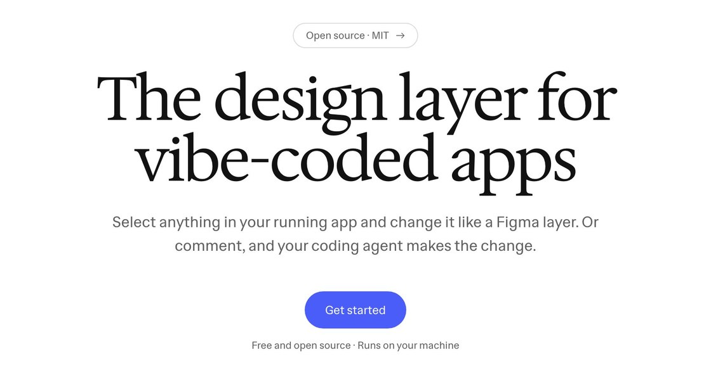

← Round 3: the launch cut · Round 5: fine-tune what you vibe coded →
Round 4: a real design fix
A new session, captured live in Design Layer: the hero's one action, made to lead. Select Get started, drag its corner radius into a pill, give it the brand indigo, and ask your agent to make every primary button match. Each cut builds on your notes on round 3. The cuts are silent; music comes later.


The button was the only action on the page and the least designed thing on it. Now it takes the pill shape of the badge above it and the indigo of the logo, so it leads the eye. Recoloring the headline didn't improve anything.
Option J · from H
Color
The grey app from H, played for laughs. “It looks… fine.” lands flat. “Rounder.” wears a selection that rounds along with the real scrub. “Brighter.” turns indigo as the color bursts out of the button, and “Now that's a button.” puts the word on a pill. The note is typed big, then the brief, every primary button following, and the line of code.
- Length
- 36.5 s
- Lead
- Grey to color, with jokes
- What changed
- More fun copy and moves; the code beat now reads at a glance.
Option K · from G
One shape
One Figma selection carries the film. It selects “it.”, and the camera goes through it into the app. Then it keeps the Select treatment you liked, rounds with “Round” as the real radius is scrubbed, fills with “Color” as the hex is typed, and flies down to become the real button. A named multiplayer cursor and corner-radius handles come straight from Figma, and the finale runs the same shape through Select, Round, Color, Ship.
- Length
- 32 s
- Lead
- Figma's own vocabulary
- What changed
- No color flood or flying chips; every transition is the selection itself.
Option L · from I
Layers
The layers opening now lands in four seconds instead of nine: the app as a plane, the editor's panels dropping onto it, the stack turning to face you. In the session the button lifts off the page and rounds up there, then the picker lifts and the color arcs from it into the button. The note stays on the page, with no layer. Then the brief and the code.
- Length
- 30.5 s
- Lead
- 3D planes
- What changed
- Opening cut from 9 s to 4 s; the comment is no longer a layer.
What I took from the references
- Figma's Config 2024 identity took basic shapes from Figma's toolbar and expanded them into the whole system. K takes that literally: the selection, its handles and its corner-radius dots are the film's one recurring shape. (It's Nice That, on the Figma Config 2024 identity)
- Show the product doing one real job with one clear outcome. Each cut follows a single edit that visibly improves the page. (Moonb, “13 Software Demo Videos That Sell the Product”)
- Arrive fast, settle long, and let motion confirm rather than perform. The new moves run on the same expo-out and in-out curves as the explainer. (DesignMD, “Linear vs Vercel: two approaches to minimal motion”)